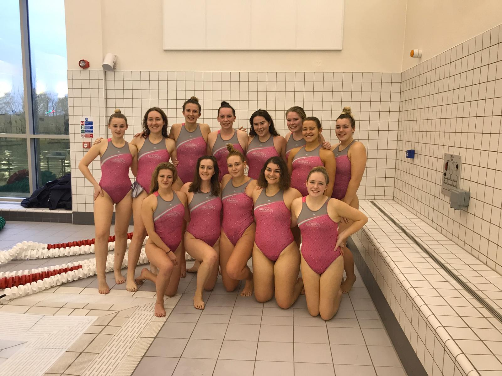
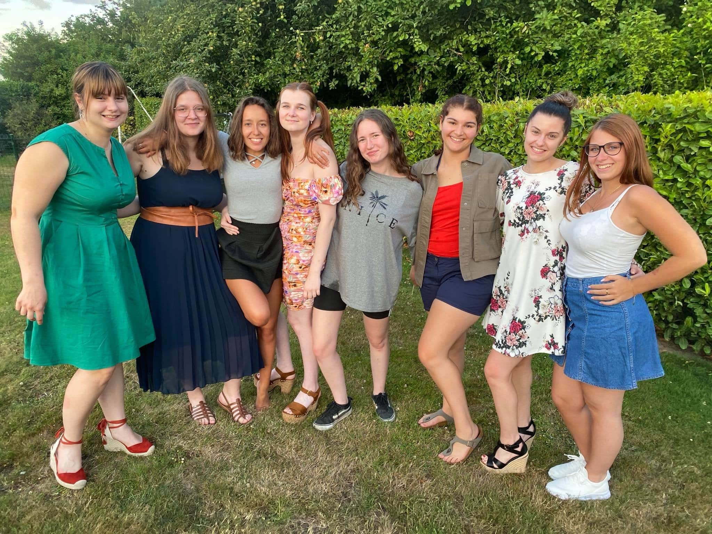

About me - Yasmin Arnould
From Brazil to the world!


I am Yasmin Arnould, but everyone calls me Yaz. I was born on January 15th 2001 in Brazil. I lived there until 2011, at this point I could only speak Portuguese and as my dad is Belgian it was time for me to properly learn French, so we moved to Sart-Eustache, his home town in Belgium. However, it wasn't that simple, before that, the plan was to move to a French-speaking place but still close to Brazil, so we flew to Martinique, a Caribbean island. It was basically heaven, but like all good things, it soon came to an end when my dad got injured while operating on a very heavy animal (he is a vet). He had to leave his job so we leaned on the backup plan which was travelling to Belgium, where he had a house and family.
In 2018, after I graduated from high school, I took a gap year to come to England and learn English. I lived with a host-family in Weston-Super-Mare, along with another exchange student from Italy, Cate, I usually refer to her as my Italian sister. During that year I decided I wanted to do more than return home and do as if that year was a pause in my life, I wanted the experience of being far from home, independent and free to last longer. So I applied to some universities here in the UK; I had no big expectations, I just wanted to try my chance. I now live in Oxford where I go to Oxford Brookes University and study Media, Journalism and Publishing.
I like to challenge myself to acquire new skills and discover things I have no experience in. I enjoy the process of learning something more than the final result of it, which being good at it. At this point, I move on to something completely different.
I am also thrilled about understanding how things function and what is the science behind everyday life elements. Some would call this curiosity but I prefer saying I have a very broad sense of interest.
Among my hobbies are: Golf 🏌,
Waterpolo 🤽 
Cooking 🍽 (My friends say I make the best vegetarian lasagna).

Reading 📚, here are a few books I have read and highly recommend:
Colour: Blue
Song: Meu Abrigo by Melim
Movie: Inglorious Basterds
Quote: "Make your life extraordinary"
Book: The Hunting Party by Lucy Foley
City: Brussels
Flower: Iris
In Brazil I have lots of relatives as my mother has 7 brothers and sisters, but I do not see them often as I only go to Brazil once a year. In Belgium I only have my father, my aunt and her son, who is my cousin but also my godfather. I am an only child so growing up my I have always been very close to my friends who are like family to me. Here is a picture of me with my friends from Belgium: 
I am a second year student and so far I have really been interested in the Journalism modules my course offers. I like the idea of researching a subject or a story and communicating it to other people. With this in mind some classmates and I have founded a news and opinion platform called Exist News. I find writing is also my preferred way of expression, and having a platform to express my opinion is awesome, especially in times when no one is necessarily willing to listen.
During the pandemic I have also started an Instagram account,@yaz_illustra ,where I occasionally post some illustrations I make.
And I have created this website to exploit my curiosity and understand how typography works and how it is used in everyday life. Go have a look at Behind the Type for some cool analysis on how typography works.